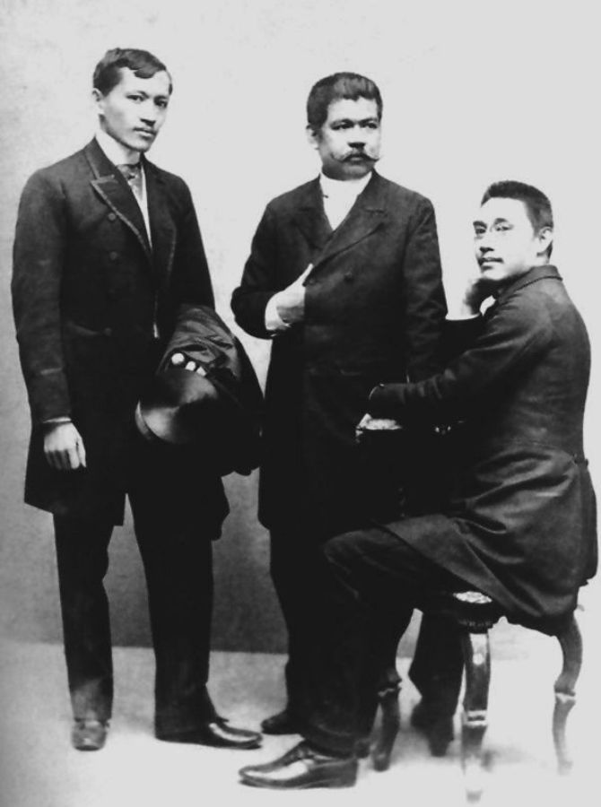

<!doctype html>
<html>
    <head>
        <title>A Tribute to Dr. Jose P. Rizal</title>
        <link href="https://fonts.googleapis.com/css2?family=Cedarville+Cursive&family=PT+Serif&display=swap" rel="stylesheet">
        <link rel="stylesheet" type="text/css" href="css/style.css">
    </head>
</html>
<body>
    <div class="background-top background"></div>
    <main id="main">
        <h1 id="title">Dr. Jose P. Rizal</h1>
        <figure id="img-div">
            
            <figcaption id="img-caption">Jose Rizal (left) alongside with fellow Filipino Ilustrados Marcelo Del Pilar (center) and Mariano Ponce (right)</figcaption>
        </figure>
        <div id="tribute-info">
            <p><b>Jose Protasio Rizal Mercado y Alonso Realonda</b> was a Filipino nationalist and polymath who became one of the icons of the late 19th century when the Philippines was still under the Spanish rule. Dubbed as the Philippines' national hero, he led La Liga Filipina, a secret organization aimed to unite the whole country against the injustices and violence perpetrated by the Spanish Government. He was a known reformist whose writings center on liberal and progressive ideas of individual rights and freedom specifically rights for the Filipino people.</p>
            <h2>Facts about Jose Rizal</h2>
            <p>
                <ul>
                    <li>Rizal was born on June 19, 1861 in Calamba, Laguna to Francisco Rizal Mercado y Alejandro and Teodora Alonso Realonda y Quintos.</li>
                    <li>He learned to read at an early age of 5.</li>
                    <li>In order to disassociate himself from his brother Paciano, who had gained notoriety with his earlier links to Filipino priests Mariano Gomez, Jose  Burgos, and Jacinto Zamora who had been accused and executed for treason, Jose Rizal dropped parts of his full name thus rendering his name as "Jose Protasio Rizal."</li>
                    <li>He decided to be an ophthalmologist after he learned that his mother was going blind.</li>
                    <li>Apart from being an ophthalmologist and a writer, he was also a sculptor, painter, educator, farmer, historian, playwright, and journalist. He was conversant in 22 languages.</li>
                    <li>He attended school in Spain to pursue a career in Medicine. During his studies, he met other Filipino Ilustrados and exchanged his reformist ideas with them. Ilustrados are Filipinos who belonged in the educated class.</li>
                    <li>He was the author of <em>Noli Me Tangere</em> and <em>El Filibusterismo</em>, two novels that inspired the Philippine Revolution against Spain.</li>
                    <li>The Spanish authorities in the Philippines accused Rizal of sedition after his novels were published.</li>
                    <li>Because of his association with the <em>Katipunan,</em> a militant secret society that was leading the uprising against Spain, Rizal was arrested and later detained in Manila. He was found guilty of sedition, rebellion, and conspiracy againtst the government. He was executed by firing squad on December 30, 1896.</li>
                </ul>
            </p>
            To read more about Dr. Jose Rizal, visit his <a href="https://en.wikipedia.org/wiki/Jos%C3%A9_Rizal" id="tribute-link" target="_blank">Wikipedia entry.</a>
        </div>
    </main>
    <div class="background-bottom background">
        <div class="background-bottom-inner">
        <p id="footer-quote">consummatum est</p>
        <p id="footer-byline">Rizal's last words</p>
        </div>
    </div>
    <script src="https://cdn.freecodecamp.org/testable-projects-fcc/v1/bundle.js"></script>
</body>